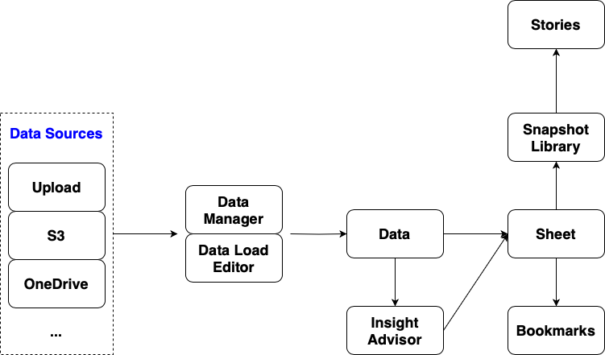

LIB CONNECT TO 'connection_name' Order: // table name LOAD OrderID, CustomerID as ActiveCustomerID, EmployeeID, ShipperID, FreightWeight; SELECT OrderID, CustomerID, EmployeeID, ShipperID, FreightWeight FROM "database_name".owner_name.table_name;
# create an action, "Select value matching search criteria"
# select a field
# set up values
='NEAR OCEAN' # single value
='("NEAR OCEAN"|"NEAR BAY")' # multiple values
# create an action, "Select value matching search criteria" # select a field # set up range ='>=5 <=10'
# create an action, "Select values in a field" # select a field # set up values ='3;4;5'
NEAR # NEAR BAY, NEAR OCEAN "NEAR BAY" # NEAR BAY NEAR Bay # NEAR BAY, NEAR OCEAN, values that contain any of the search strings +OCEAN NEAR # NEAR OCEAN, <1H OCEAN, strings with a plus sign must be included NEAR -BAY # NEAR OCEAN, removes all values containing this string with a minus sign
# *, in the place of zero or more characters N* # NEAR BAY, NEAR OCEAN # ?, in the place of a single character N?ar* # NEAR BAY, NEAR OCEAN # ^, beginning of a work *^Ba* # NEAR BAY
> 100 > 100 < 200 # and
# returns a list of values which may not be identical to the search input ~neay ocean # NEAR OCEAN, <H OCEAN, NEAR BAY
# Search for values across all fields associated with the search field # An expression search always begins with an equals sign = # within the filter panel of ocean_proximity =avg(total_rooms) > 2500 # <1H OCEAN, INLAND, NEAR OCEAN
# use multiple search operators in a single compound search # enclose the search within a set of parentheses (N*|*land) # INLAND, ISLAND, NEAR BAY, NEAR OCEAN
# compare the contributions of your selections and excluded values against your measures
# only supports text search # measure values are not included in smart search # When use smart search to search the data, make a selection from the searched results
Show me the sales in USA
# Store table_name into 'lib://connect_name/table_name.type'(type) Store Customers into 'lib://connect_name/Customers.qvd'(qvd) Store Customers into 'lib://connect_name/Customers.csv'(txt) Store Customers into 'lib://connect_name/Customers.parquet'(parquet)
LOAD field_1, field_2 FROM 'lib://connect_name/Customer.qvd'(qvd)